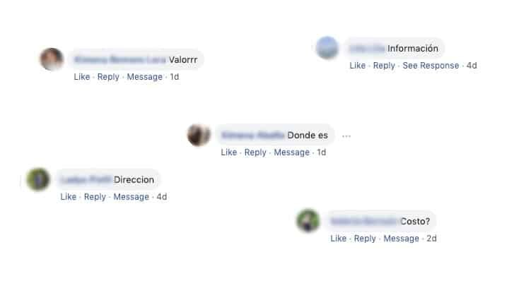

Hoy en día sabemos que las redes sociales son parte de nuestra cotidianeidad y que ellas pueden convertirse en grandes herramientas, siempre cuando sean ocupadas de manera asertiva, cuidadosa y respetuosa.
Podríamos reflexionar sobre muchos aspectos que se ven involucrados cuando hablamos de las TIC (Tecnologías de la información y la comunicación), dirigiendo el foco hacia lo negativo o lo positivo. Pero el ampliar la visión y reconocer sus múltiples beneficios es pertinente, ya que de esta manera no podrías estar leyendo este artículo.
Cuando hablamos de que este recurso es capaz de transformarse en una posibilidad de crecimiento social, es preciso comprender que esto se puede sostener cuando lo personal es atendido como debe ser. El comunicarnos virtualmente debe estar teñido de las mismas cualidades que significan en lo presencial. Es necesario impregnar el mundo de las redes sociales de una actitud con características humanas para que todo tenga más sentido, más coherencia, más trascendencia.
La inmediatez que nos apremia hoy en día, a momentos nos hace olvidar aquello que no puede ausentarse nunca, ya que es lo que nos construye, lo que nos diferencia. El conseguir las cosas con prontitud nos impulsa a dejar de pensar antes de actuar, a dejar de ser empáticos, a romper los códigos del respeto, a no observar, a no reflexionar…
Cuando leemos una información sobre un curso, un taller, una venta, etc… debemos ser capaces de concientizar sobre todo el trabajo que existe detrás para que eso haya llegado hasta tu ojos. En ese proceso de toma de conciencia, aparecen aquellos códigos de respeto que mencionamos recientemente.
El trabajo sostenido como YogaKiddy, radica siempre en la valoración del ser humano en toda su magnitud, es decir, cada una de nuestras acciones es para contribuir a un desarrollo integral de toda persona involucrada en la gran red que tejemos día a día.
Es por esto que por medio de detalles y acciones concretas, respetamos el tiempo y la voluntad de que quienes nos escriben para consultarnos por información de material a la venta, de formaciones a facilitar u otros. Intentamos que quien se encuentre al otro lado de la pantalla, se sienta acogido/a mediante un trato amoroso, personalizado y cálido.
Anhelamos que lo mismo suceda del otro lado, ya que en varias ocasiones nos hemos encontrado con maneras poco amables de pedir una información, careciendo de tintes basados en el respeto. Tomarnos un poco más de tiempo para pedir por favor las cosas, nos hace más grandes, más nobles, más humanos. Así como lo es también, el saludo… No porque nos estemos comunicando a través de una pantalla, nuestro lenguaje tiene que verse disminuido, verse afectado de nociones transversales a la tecnología.
Hace unos días compartimos un artículo sobre la coherencia en nuestras labores y ahí queremos anclar el mensaje. Si estás interesado/a en aprender sobre el mundo del yoga infantil y sus variadas posibilidades que ofrece YogaKiddy, es oportuno que puedas revisar tu manera de comunicarte, ya que tus acciones son el mejor ejemplo de transformación.
Es por esto que invitamos a todos y a todas que en las redes sociales:
- Se tomen el tiempo de incluir la hermosa palabra “Por favor” en sus mensajes.
- Que hagan de un hábito, el colorear su lenguaje escrito con el vocablo “Gracias”.
- A leer con atención y comprensión la información proporcionada, para luego no reiterar en la solicitud de esta.
- Saber que no eres la única persona que requiere información, por lo que es conveniente disfrutar de la paciencia.
- Enriquecer el vocabulario para no reducir las ansias de conocer sobre algo, utilizando simplemente palabras como: “me interesa”, “información” e incluso aminorar el interés sólo a lo económico plasmando el signo “$”.
Muchas gracias por leernos, creemos que la expresión escrita es un camino que nos ayuda a evolucionar, a nutrirnos, a seguir avanzando.
Peggysue.S.S